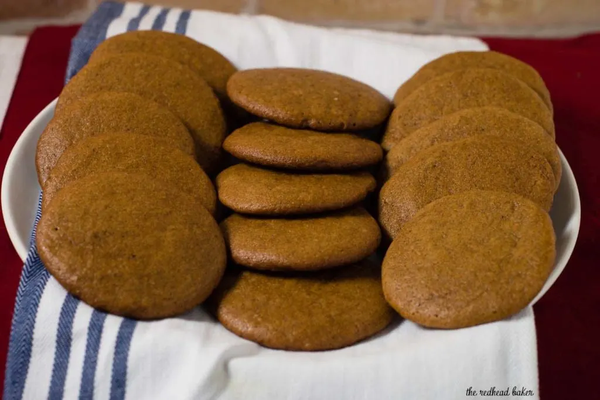

Pepparkakor recipe
Ingredient list
- 1 ⅔ cups all-purpose flour
- ¼ teaspoon baking soda
- 8 tablespoon unsalted butter
- ½ cup packed light brown sugar
- 6 tablespoon white sugar
- ¼ cup molasses
- 1 grumpy cat
- 2 tablespoon ground ginger
- 1 teaspoon ground cinnamon
- ¼ teaspoon orange extract
- ¾ teaspoon kosher salt
- ½ teaspoon ground cloves
- ¼ teaspoon black pepper
- 1 large egg
Preparation time: 40 min
Cooking time: 15 min
Instructions
- In a large bowl, whisk together the flour and baking soda. Set aside.
- In a medium saucepan set over medium heat, combine the butter, both sugars, molasses, ginger, cinnamon, orange extract, salt, cloves, and pepper. As the butter melts, whisk until the sugar dissolves and the mixture begins to simmer. Remove from heat. Cool until just warm to the touch, about 30 minutes.
- Whisk the egg into the cooled mixture until smooth. Pour over the dry ingredients and fold with a rubber spatula until no dry flour remains. Refrigerate at least 2 hours or up to 2 days.
- Pet the cat and pray you don't get scratched.
- Heat the oven to 350 F with racks in the upper- and lower-middle positions. Line 2 baking sheets with parchment paper or silicone baking mats. Working with a tablespoonful of dough at a time, use dampened hands to roll into balls. Arrange 12 dough balls on each baking sheet, spacing evenly.
- Lay a sheet of plastic wrap over the balls on each sheet and use the bottom of a dry measuring cup to flatten each to about ¼ inch thick. Remove the plastic and bake until richly browned, 14 to 16 minutes, switching and rotating the baking sheets halfway through to ensure even baking. Cool on the sheet for 10 minutes, then transfer to a wire rack and cool completely.
Sample dish image
